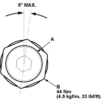

Special Tools Required
Locknut wrench, 43 mm 07MAA-SL00200
- Set the wheels in the straight ahead position.
- Remove the transmission mount bracket (see step 18 on page 13-18).
- Loosen the rack guide screw locknut (A) with the special tool, then remove the rack guide screw (B).
NOTE: LHD type is shown, RHD type is symmetrical.

- Remove the old sealant from rack guide screw and apply new sealant to the middle of the threads (C). Loosely install the rack guide screw on the steering gearbox.

- Tighten the rack guide screw (A) to 25 Nm (2.5 kgf/m, 18 lbf/ft), then loosen it.

- Retighten the rack guide screw to 6 Nm (0.6 kgf/;m, 4 lbf/ft), then back it off to specified angle.
Specified Return Angle:
5° Max.
- Hold the rack guide screw stationary with a wrench and tighten the locknut by hand until it is fully seated.
- Install the special tool on the locknut (B) and hold the rack guide screw (A) stationary with a wrench. Tighten the locknut an additional 30° with the special tool.
- Reinstall the transmission mount bracket.
- Check for unusual steering effort through the complete turning travel.
- Check the steering wheel rotation play and the power assist.